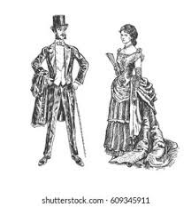

Marcha Gen Z: 3 señalados de tentativa de homicidio sin consignar, 8 van al Reclusorio Norte
Ciudad de México. Ocho de los 18 detenidos tras la marcha del pasado sábado fueron trasladados al Reclusorio Preventivo Varonil Norte en donde se prevé sean presentados ante un juez de control, en tanto tres imputados por tentativa de homicidio se encuentran en espera de ser consignados ante la autoridad que los requiere.
Esta tarde, los detenidos fueron llevados al centro de reclusión pese a la oposición de sus familiares, quienes desde la madrugada se apostaron afuera de la Coordinación Territorial CUH-1 y entre gritos: “¡No son delincuentes!”, exigían su liberación e incluso intentaron impedir el traslado colocándose frente a las unidades.
De acuerdo con la carpeta de investigación abierta por el delito de homicidio en grado de tentativa, el elemento del Sector Alameda, Miguel Ángel D, fue agredido por varios sujetos del bloque negro. El elemento narró que sobre el piso varios de los agresores lo amenazaron con matarlo:"Te vamos a matar puto policía de mierda, les sirves a la izquierda, pinche ojete vendido, vas a morir esbirro del Gobierno", se lee en el documento.
Pelea de Punks peligro u amenazas
La "pelea de los emos contra punks" se refiere a un enfrentamiento físico ocurrido el 16 de marzo de 2008 en la Glorieta de los Insurgentes en Ciudad de México. Surgió por una convocatoria en internet y escaló desde agresiones verbales a físicas debido a tensiones entre las subculturas, con los punks afirmando que los emos copiaban sus estilos y atacaban a los emos por este motivo. La situación se calmó parcialmente gracias a la intervención de la policía y finalmente con la aparición de un grupo de Hare Krishna.
En la decoración victoriana, es común encontrar patrones florales, papel tapiz elaborado y una mezcla de estilos históricos, incluyendo gótico, renacentista y rococó. Las habitaciones suelen estar llenas de accesorios decorativos como lámparas de araña, cortinas pesadas y alfombras persas.
Convocatoria y miedo: Jóvenes emos se reunieron para manifestarse y defender su ideología tras recibir amenazas por internet de ser atacados por grupos anti-emo (principalmente punks). Inicio del conflicto: Los punks llegaron a la glorieta y el enfrentamiento comenzó con gritos, evolucionando rápidamente a agresiones físicas, incluyendo el uso de cinturones. Intervención policial: La policía intervino para intentar separar a los grupos, pero la situación de violencia continuó y se intensificó en varias ocasiones. Resolución temporal: La confrontación se calmó de manera temporal cuando un grupo de Hare Krishna comenzó a cantar, logrando dispersar momentáneamente a ambos bandos. Saldo final: A pesar de la magnitud del enfrentamiento, se reportó un saldo blanco, es decir, sin heridos graves.

¡APUÑALAN A JULIO CÉSAR EN PLENO SENADO!
El líder romano cae víctima de una conspiración entre sus propios aliados políticos
Roma quedó conmocionada esta mañana luego de que Cayo Julio César, dictador perpetuo de la República, fuera asesinado brutalmente dentro de la Curia de Pompeyo durante una sesión del Senado.
Según testimonios de presentes, un grupo de senadores —alrededor de veinte— rodeó al mandatario bajo el pretexto de presentarle una petición. Minutos después, los conspiradores sacaron dagas ocultas entre sus túnicas y lo atacaron repetidamente.
¿Qué sigue para Roma?
El asesinato abre una profunda crisis política. Sin líder claro y con las tensiones entre facciones aumentando, el futuro de la República es incierto. Analistas temen que este hecho desate una guerra civil de grandes proporciones.